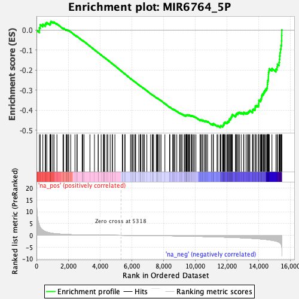
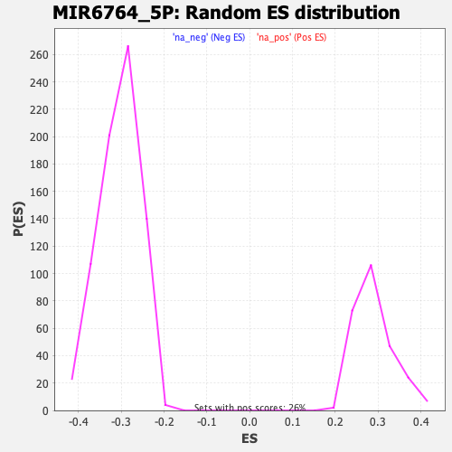

| | | Dataset | DE_genes |
| Phenotype | NoPhenotypeAvailable |
| Upregulated in class | na_neg |
| GeneSet | MIR6764_5P |
| Enrichment Score (ES) | -0.4857796 |
| Normalized Enrichment Score (NES) | -1.5948387 |
| Nominal p-value | 0.0 |
| FDR q-value | 0.16925913 |
| FWER p-Value | 0.921 |
Table: GSEA Results Summary

Fig 1: Enrichment plot: MIR6764_5P
Profile of the Running ES Score & Positions of GeneSet Members on the Rank Ordered List
| PROBE | GENE SYMBOL | GENE_TITLE | RANK IN GENE LIST | RANK METRIC SCORE | RUNNING ES | CORE ENRICHMENT | | 1 | RPH3A | | | 184 | 4.160 | 0.0115 | No |
| 2 | ACTB | | | 238 | 3.355 | 0.0270 | No |
| 3 | TNFSF8 | | | 399 | 2.212 | 0.0291 | No |
| 4 | ZC3H12A | | | 555 | 1.569 | 0.0278 | No |
| 5 | GUF1 | | | 583 | 1.507 | 0.0346 | No |
| 6 | SIAH2 | | | 652 | 1.370 | 0.0379 | No |
| 7 | PTPN6 | | | 846 | 1.047 | 0.0311 | No |
| 8 | C12orf75 | | | 883 | 0.998 | 0.0344 | No |
| 9 | TMEM229B | | | 887 | 0.994 | 0.0399 | No |
| 10 | SYNGAP1 | | | 917 | 0.957 | 0.0434 | No |
| 11 | C17orf97 | | | 1027 | 0.823 | 0.0409 | No |
| 12 | IFITM10 | | | 1106 | 0.750 | 0.0400 | No |
| 13 | VAMP1 | | | 1290 | 0.618 | 0.0316 | No |
| 14 | C1RL | | | 1670 | 0.447 | 0.0093 | No |
| 15 | ZNF474 | | | 1710 | 0.427 | 0.0091 | No |
| 16 | TFE3 | | | 1869 | 0.363 | 0.0008 | No |
| 17 | SPIB | | | 1891 | 0.357 | 0.0015 | No |
| 18 | PTCHD1 | | | 1937 | 0.346 | 0.0005 | No |
| 19 | CD79A | | | 2009 | 0.323 | -0.0023 | No |
| 20 | TMEM217 | | | 2030 | 0.317 | -0.0018 | No |
| 21 | ATF7IP2 | | | 2156 | 0.280 | -0.0084 | No |
| 22 | MICU1 | | | 2426 | 0.220 | -0.0248 | No |
| 23 | PBX2 | | | 2552 | 0.199 | -0.0319 | No |
| 24 | ADAMTS4 | | | 2563 | 0.197 | -0.0314 | No |
| 25 | RAB31 | | | 2878 | 0.152 | -0.0511 | No |
| 26 | PCDHGC3 | | | 2918 | 0.147 | -0.0528 | No |
| 27 | TSKU | | | 2920 | 0.147 | -0.0521 | No |
| 28 | CYP21A2 | | | 2997 | 0.140 | -0.0562 | No |
| 29 | SPRED3 | | | 3369 | 0.109 | -0.0799 | No |
| 30 | SLC18A1 | | | 3653 | 0.089 | -0.0979 | No |
| 31 | FAM53A | | | 3891 | 0.076 | -0.1130 | No |
| 32 | VPS37D | | | 3892 | 0.076 | -0.1126 | No |
| 33 | TMEM132B | | | 4075 | 0.066 | -0.1241 | No |
| 34 | OTUD1 | | | 4219 | 0.057 | -0.1332 | No |
| 35 | HNF1A | | | 4233 | 0.057 | -0.1337 | No |
| 36 | RIMS4 | | | 4261 | 0.055 | -0.1352 | No |
| 37 | GRM6 | | | 4303 | 0.053 | -0.1376 | No |
| 38 | CACNG2 | | | 4442 | 0.045 | -0.1463 | No |
| 39 | SUSD2 | | | 4495 | 0.042 | -0.1495 | No |
| 40 | TPBGL | | | 4644 | 0.034 | -0.1590 | No |
| 41 | SLC8A2 | | | 4778 | 0.027 | -0.1676 | No |
| 42 | CWC27 | | | 4789 | 0.026 | -0.1681 | No |
| 43 | PLEKHG4B | | | 4943 | 0.020 | -0.1780 | No |
| 44 | PAQR4 | | | 5410 | -0.005 | -0.2085 | No |
| 45 | KCNJ12 | | | 5437 | -0.006 | -0.2101 | No |
| 46 | WNT3A | | | 5573 | -0.013 | -0.2189 | No |
| 47 | C10orf105 | | | 5580 | -0.014 | -0.2192 | No |
| 48 | PTGES2 | | | 5925 | -0.034 | -0.2415 | No |
| 49 | XPNPEP2 | | | 5998 | -0.039 | -0.2460 | No |
| 50 | PFKFB3 | | | 6050 | -0.042 | -0.2491 | No |
| 51 | GDF5 | | | 6133 | -0.048 | -0.2542 | No |
| 52 | SUFU | | | 6219 | -0.054 | -0.2595 | No |
| 53 | SORCS2 | | | 6232 | -0.055 | -0.2600 | No |
| 54 | SLA | | | 6253 | -0.056 | -0.2610 | No |
| 55 | ZNF483 | | | 6451 | -0.069 | -0.2735 | No |
| 56 | PCDHGA12 | | | 6542 | -0.075 | -0.2789 | No |
| 57 | DAGLA | | | 6570 | -0.077 | -0.2803 | No |
| 58 | PRRT1 | | | 6583 | -0.079 | -0.2806 | No |
| 59 | CLCC1 | | | 6700 | -0.088 | -0.2877 | No |
| 60 | SLC1A4 | | | 6740 | -0.090 | -0.2897 | No |
| 61 | BZW1 | | | 6807 | -0.096 | -0.2935 | No |
| 62 | CACFD1 | | | 6956 | -0.107 | -0.3026 | No |
| 63 | SYS1 | | | 7195 | -0.127 | -0.3175 | No |
| 64 | UCP3 | | | 7303 | -0.136 | -0.3237 | No |
| 65 | SYNC | | | 7328 | -0.139 | -0.3245 | No |
| 66 | NCLN | | | 7384 | -0.143 | -0.3273 | No |
| 67 | SYCP2L | | | 7549 | -0.156 | -0.3371 | No |
| 68 | MYRF | | | 7597 | -0.161 | -0.3393 | No |
| 69 | KIF13A | | | 7630 | -0.164 | -0.3405 | No |
| 70 | PTPN7 | | | 7686 | -0.169 | -0.3431 | No |
| 71 | PRKCQ | | | 7769 | -0.176 | -0.3475 | No |
| 72 | ZNF500 | | | 7851 | -0.184 | -0.3518 | No |
| 73 | SLC7A8 | | | 8093 | -0.208 | -0.3664 | No |
| 74 | EXOC3L2 | | | 8387 | -0.238 | -0.3842 | No |
| 75 | FBXL18 | | | 8409 | -0.241 | -0.3842 | No |
| 76 | SNPH | | | 8585 | -0.260 | -0.3942 | No |
| 77 | LARP1 | | | 8622 | -0.264 | -0.3951 | No |
| 78 | TAGLN2 | | | 8668 | -0.270 | -0.3965 | No |
| 79 | NHSL1 | | | 8729 | -0.277 | -0.3988 | No |
| 80 | SDK1 | | | 8844 | -0.291 | -0.4047 | No |
| 81 | CHTF8 | | | 9017 | -0.312 | -0.4142 | No |
| 82 | ITPK1 | | | 9063 | -0.319 | -0.4153 | No |
| 83 | ZNF609 | | | 9154 | -0.329 | -0.4193 | No |
| 84 | ADRA2B | | | 9179 | -0.333 | -0.4190 | No |
| 85 | TAB1 | | | 9311 | -0.348 | -0.4256 | No |
| 86 | VWA3A | | | 9329 | -0.350 | -0.4248 | No |
| 87 | C3orf35 | | | 9400 | -0.358 | -0.4273 | No |
| 88 | RAB1B | | | 9422 | -0.361 | -0.4266 | No |
| 89 | MAU2 | | | 9438 | -0.365 | -0.4256 | No |
| 90 | MDM4 | | | 9440 | -0.365 | -0.4236 | No |
| 91 | SET | | | 9475 | -0.369 | -0.4237 | No |
| 92 | RUNX3 | | | 9497 | -0.373 | -0.4230 | No |
| 93 | EFR3B | | | 9537 | -0.378 | -0.4234 | No |
| 94 | NFIC | | | 9595 | -0.387 | -0.4249 | No |
| 95 | UBTD1 | | | 9630 | -0.393 | -0.4249 | No |
| 96 | OVOL1 | | | 9650 | -0.396 | -0.4239 | No |
| 97 | ALAD | | | 9755 | -0.410 | -0.4284 | No |
| 98 | ZNF426 | | | 9763 | -0.412 | -0.4265 | No |
| 99 | GIGYF1 | | | 9810 | -0.419 | -0.4272 | No |
| 100 | ZNF471 | | | 9888 | -0.431 | -0.4298 | No |
| 101 | CORO2B | | | 9962 | -0.442 | -0.4321 | No |
| 102 | GIGYF2 | | | 10050 | -0.455 | -0.4352 | No |
| 103 | ANKRD52 | | | 10311 | -0.493 | -0.4494 | No |
| 104 | PGPEP1 | | | 10325 | -0.494 | -0.4475 | No |
| 105 | RNPEPL1 | | | 10382 | -0.502 | -0.4483 | No |
| 106 | SPSB1 | | | 10475 | -0.515 | -0.4514 | No |
| 107 | GRK6 | | | 10485 | -0.517 | -0.4491 | No |
| 108 | PABPC1 | | | 10594 | -0.537 | -0.4531 | No |
| 109 | WNT2B | | | 10641 | -0.544 | -0.4530 | No |
| 110 | YPEL4 | | | 10713 | -0.555 | -0.4545 | No |
| 111 | KREMEN1 | | | 10784 | -0.565 | -0.4559 | No |
| 112 | SRF | | | 11024 | -0.602 | -0.4682 | No |
| 113 | MAVS | | | 11130 | -0.622 | -0.4715 | No |
| 114 | CXXC1 | | | 11135 | -0.623 | -0.4683 | No |
| 115 | TGIF2 | | | 11151 | -0.627 | -0.4657 | No |
| 116 | RNF121 | | | 11379 | -0.673 | -0.4768 | No |
| 117 | WSCD1 | | | 11432 | -0.684 | -0.4763 | No |
| 118 | MLEC | | | 11578 | -0.715 | -0.4817 | Yes |
| 119 | TMEM245 | | | 11586 | -0.716 | -0.4781 | Yes |
| 120 | PREX2 | | | 11623 | -0.725 | -0.4764 | Yes |
| 121 | NAV1 | | | 11728 | -0.747 | -0.4790 | Yes |
| 122 | CDIP1 | | | 11756 | -0.752 | -0.4765 | Yes |
| 123 | SYT7 | | | 11775 | -0.756 | -0.4734 | Yes |
| 124 | NDOR1 | | | 11806 | -0.763 | -0.4710 | Yes |
| 125 | PKP1 | | | 11812 | -0.764 | -0.4670 | Yes |
| 126 | TSPAN17 | | | 11821 | -0.766 | -0.4632 | Yes |
| 127 | TCF3 | | | 11857 | -0.773 | -0.4611 | Yes |
| 128 | RABEP2 | | | 11915 | -0.789 | -0.4604 | Yes |
| 129 | PPIE | | | 11998 | -0.805 | -0.4612 | Yes |
| 130 | BACH2 | | | 12049 | -0.815 | -0.4599 | Yes |
| 131 | FRMD8 | | | 12055 | -0.815 | -0.4556 | Yes |
| 132 | SNX33 | | | 12124 | -0.835 | -0.4553 | Yes |
| 133 | IGFN1 | | | 12136 | -0.838 | -0.4513 | Yes |
| 134 | IP6K1 | | | 12153 | -0.843 | -0.4476 | Yes |
| 135 | TMEM120B | | | 12166 | -0.845 | -0.4436 | Yes |
| 136 | BTD | | | 12234 | -0.862 | -0.4431 | Yes |
| 137 | TCF12 | | | 12247 | -0.864 | -0.4390 | Yes |
| 138 | TMEM184B | | | 12270 | -0.869 | -0.4355 | Yes |
| 139 | PDE1B | | | 12284 | -0.874 | -0.4314 | Yes |
| 140 | XRCC3 | | | 12322 | -0.883 | -0.4288 | Yes |
| 141 | EXOC4 | | | 12332 | -0.886 | -0.4244 | Yes |
| 142 | MGAT3 | | | 12352 | -0.890 | -0.4206 | Yes |
| 143 | ZBTB2 | | | 12543 | -0.939 | -0.4277 | Yes |
| 144 | SZT2 | | | 12568 | -0.944 | -0.4240 | Yes |
| 145 | ARMC7 | | | 12584 | -0.949 | -0.4196 | Yes |
| 146 | SREBF2 | | | 12618 | -0.959 | -0.4163 | Yes |
| 147 | COPS7A | | | 12697 | -0.981 | -0.4159 | Yes |
| 148 | ELMSAN1 | | | 12710 | -0.985 | -0.4111 | Yes |
| 149 | OLFML2A | | | 12792 | -1.009 | -0.4107 | Yes |
| 150 | NPLOC4 | | | 12901 | -1.046 | -0.4118 | Yes |
| 151 | ABHD2 | | | 13053 | -1.091 | -0.4155 | Yes |
| 152 | ICOSLG | | | 13069 | -1.097 | -0.4103 | Yes |
| 153 | LIF | | | 13208 | -1.142 | -0.4129 | Yes |
| 154 | NFASC | | | 13293 | -1.172 | -0.4117 | Yes |
| 155 | ARHGAP32 | | | 13351 | -1.195 | -0.4087 | Yes |
| 156 | ZBTB4 | | | 13395 | -1.211 | -0.4047 | Yes |
| 157 | SOGA1 | | | 13450 | -1.232 | -0.4012 | Yes |
| 158 | MMP24 | | | 13618 | -1.298 | -0.4048 | Yes |
| 159 | PRRC2A | | | 13619 | -1.298 | -0.3975 | Yes |
| 160 | RBFA | | | 13674 | -1.320 | -0.3935 | Yes |
| 161 | LRSAM1 | | | 13779 | -1.372 | -0.3926 | Yes |
| 162 | C12orf49 | | | 13782 | -1.373 | -0.3849 | Yes |
| 163 | TOLLIP | | | 13794 | -1.379 | -0.3778 | Yes |
| 164 | ZFYVE27 | | | 13886 | -1.418 | -0.3758 | Yes |
| 165 | ZNF629 | | | 13996 | -1.469 | -0.3746 | Yes |
| 166 | POFUT2 | | | 14007 | -1.474 | -0.3669 | Yes |
| 167 | ARMC5 | | | 14013 | -1.477 | -0.3589 | Yes |
| 168 | YKT6 | | | 14015 | -1.477 | -0.3506 | Yes |
| 169 | RNF216 | | | 14118 | -1.547 | -0.3485 | Yes |
| 170 | NPTX1 | | | 14155 | -1.574 | -0.3420 | Yes |
| 171 | ECE1 | | | 14188 | -1.594 | -0.3350 | Yes |
| 172 | MXI1 | | | 14201 | -1.603 | -0.3268 | Yes |
| 173 | VASH1 | | | 14234 | -1.622 | -0.3197 | Yes |
| 174 | DEAF1 | | | 14300 | -1.660 | -0.3145 | Yes |
| 175 | NEURL1B | | | 14340 | -1.682 | -0.3076 | Yes |
| 176 | TEF | | | 14389 | -1.712 | -0.3010 | Yes |
| 177 | LSS | | | 14442 | -1.747 | -0.2945 | Yes |
| 178 | ISY1 | | | 14510 | -1.796 | -0.2888 | Yes |
| 179 | CEP250 | | | 14549 | -1.828 | -0.2809 | Yes |
| 180 | TEAD3 | | | 14552 | -1.831 | -0.2707 | Yes |
| 181 | LZTS1 | | | 14565 | -1.843 | -0.2610 | Yes |
| 182 | FAM107A | | | 14574 | -1.849 | -0.2511 | Yes |
| 183 | PPP2R5D | | | 14614 | -1.889 | -0.2429 | Yes |
| 184 | CPXM2 | | | 14616 | -1.891 | -0.2323 | Yes |
| 185 | DPYSL3 | | | 14619 | -1.894 | -0.2217 | Yes |
| 186 | MEF2D | | | 14625 | -1.896 | -0.2113 | Yes |
| 187 | HEYL | | | 14655 | -1.923 | -0.2023 | Yes |
| 188 | OAZ2 | | | 14673 | -1.941 | -0.1924 | Yes |
| 189 | ORAI2 | | | 14840 | -2.096 | -0.1915 | Yes |
| 190 | KIAA0930 | | | 15095 | -2.464 | -0.1941 | Yes |
| 191 | MAP4 | | | 15163 | -2.565 | -0.1840 | Yes |
| 192 | SPRYD3 | | | 15189 | -2.628 | -0.1708 | Yes |
| 193 | ADCY6 | | | 15287 | -2.883 | -0.1608 | Yes |
| 194 | MAPKAPK2 | | | 15312 | -2.988 | -0.1455 | Yes |
| 195 | CRY2 | | | 15331 | -3.075 | -0.1292 | Yes |
| 196 | PBXIP1 | | | 15346 | -3.141 | -0.1124 | Yes |
| 197 | MAFF | | | 15377 | -3.396 | -0.0951 | Yes |
| 198 | BAP1 | | | 15413 | -3.723 | -0.0763 | Yes |
| 199 | PDGFRB | | | 15447 | -4.465 | -0.0532 | Yes |
| 200 | NDST1 | | | 15455 | -4.695 | -0.0271 | Yes |
| 201 | STC1 | | | 15461 | -4.959 | 0.0007 | Yes |
Table: GSEA details [plain text format]

Fig 2: MIR6764_5P: Random ES distribution
Gene set null distribution of ES for MIR6764_5P